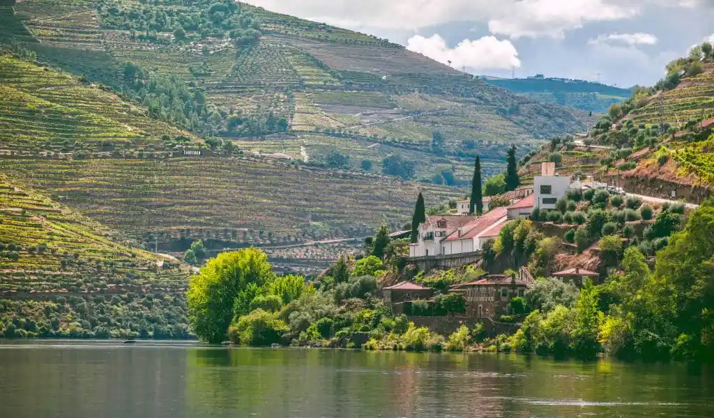
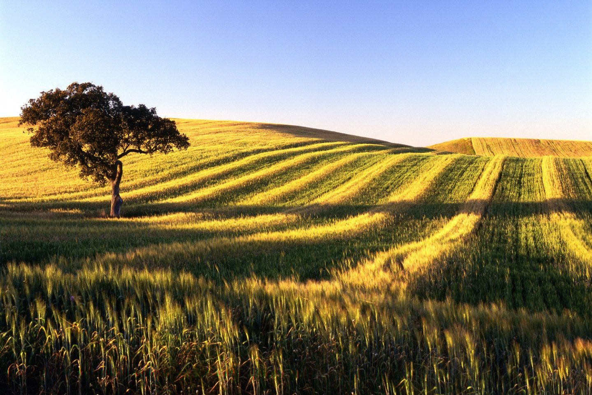
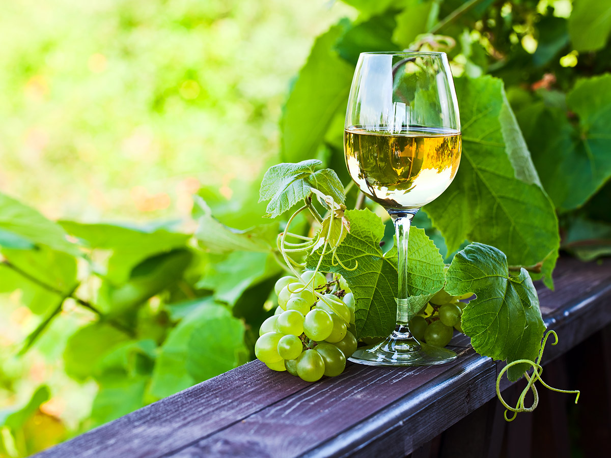
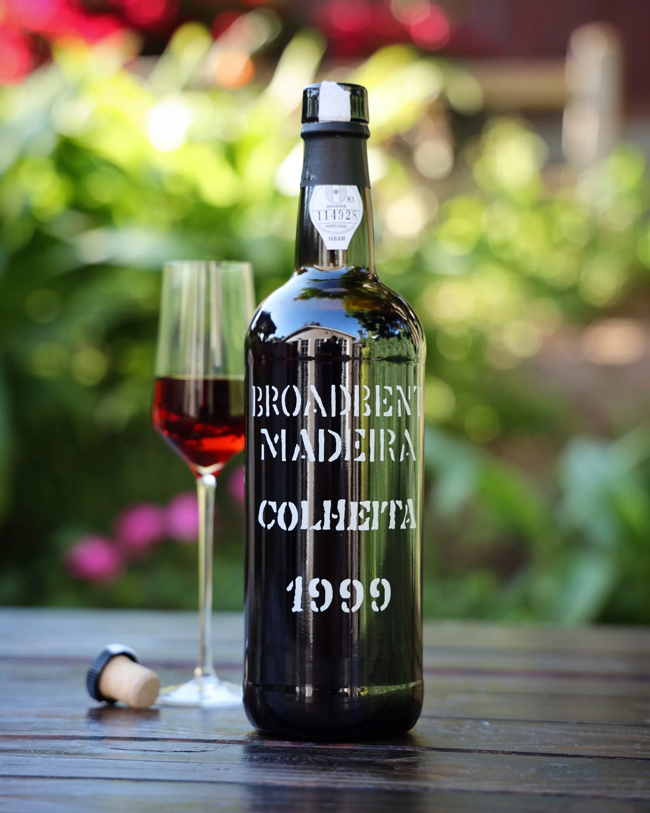
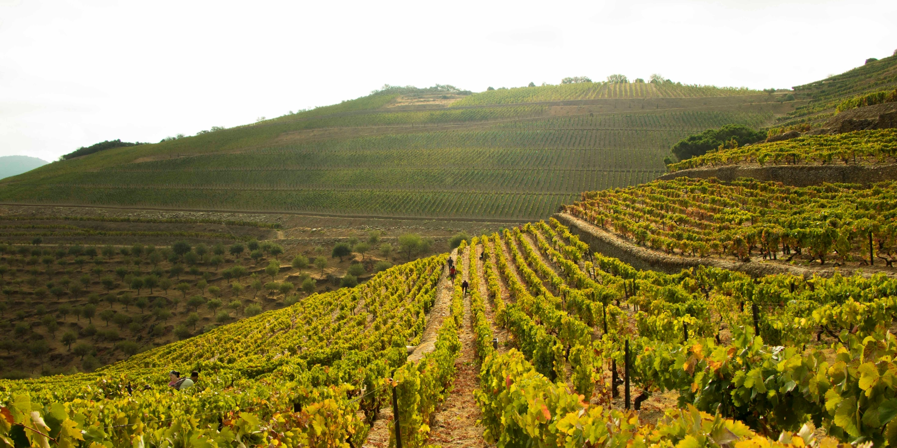
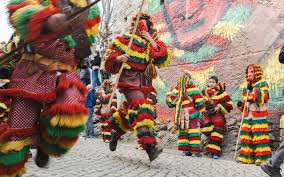

The Douro Valley
Cruise through the world’s oldest demarcated wine region, famous for its terraced vineyards and world-class Port wine.

Alentejo Plains
Taste robust, sun-drenched reds in a region characterized by vast cork oak forests and whitewashed wine estates.

Vinho Verde
Sample the crisp, slightly effervescent "green wine" unique to the lush, rainy northwest of Portugal.

Madeira Wine
Discover the complex, fortified wines of Madeira, aged through a unique heating process born from historic ocean voyages.

Wine Estates (Quintas)
Stay at historic wine-producing estates, offering guided tastings, cellar tours, and vineyard walks.

Harvest Festivals
Participate in the traditional "vindimas" (grape harvests) in September, complete with grape-stomping and folk music.